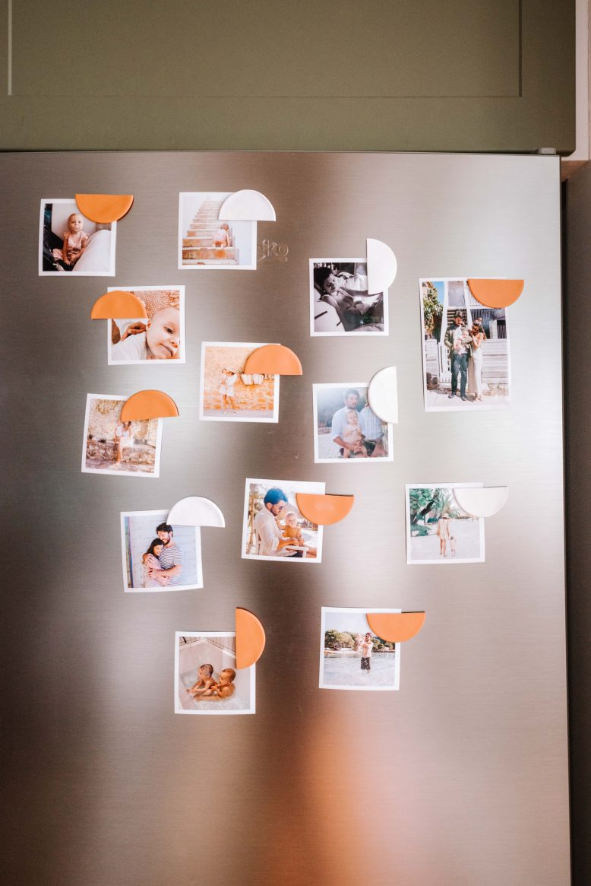

Make These Easy DIY Clay Fridge Magnets
When it comes to projects for the home, sometimes it’s the most simple ones that bring the most joy.
Take these fridge magnets as an example. I love having photos on the fridge, but HATE all those ugly fridge magnets out there. Our old black fridge magnets were not cute at all and it took me a while to come up with something to do instead. This project took barely any time at all. I love these magnets too because they make really nice gifts, stuck to the front of a card with some photos inside.
Materials
- Photos. I printed mine at home using the Canon printer I have.
- Sculpey souffle polymer clay in pumpkin and white.
- A rolling pin or wine bottle
- A circle cookie cutter or small glass
- Magnets
- Glue
Lets Get Started!
Step 1
The first step is to roll your clay into a ball. It may be a little stiff at first but once you warm it up it's easier to use.
Step 2
Using a rolling pin or wine bottle, roll out the clay flat, nice and thin. Then use a round cookie cutter or a glass to cut out your clay into circles.
Step 3
Put your clay circles onto a tray and bake them on a low temp for around ten minutes. You can tell when they are done if you use your nail to press the edge.
Step 4
Once they're done, you can cut them into the half circles. I find that doing this after baking rather than before gives a nice clean finish for the edge, and with polymer clay they won't crack when you cut it. Simply use a pen to draw a line through the middle and then cut it using scissors.
Step 5
Make sure that when you attach the magnets you put the attracting side outwards, if you glue that to the clay you'll find that the magnets won't stick to your fridge.
Step 6
To make these into really lovely gifts, I like to simply stick two onto a front of a plain white card (these I recycled from a box I had) and then pop some cute photos inside. Such a perfect Valentines or Mother's Day gift!